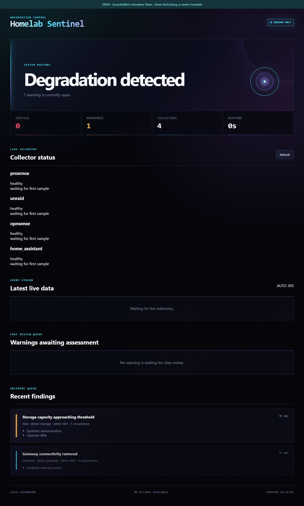
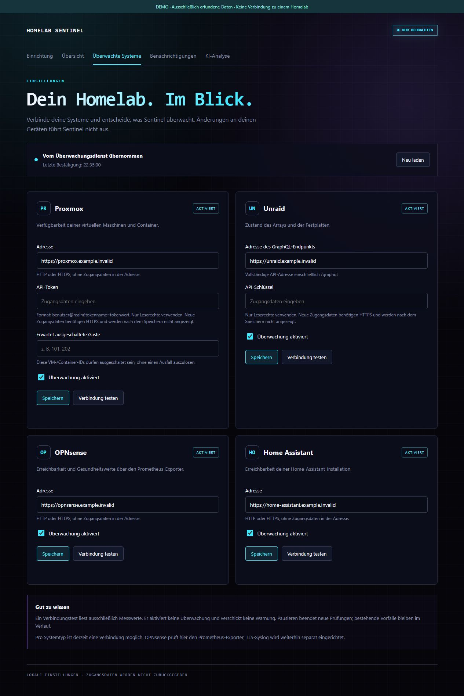
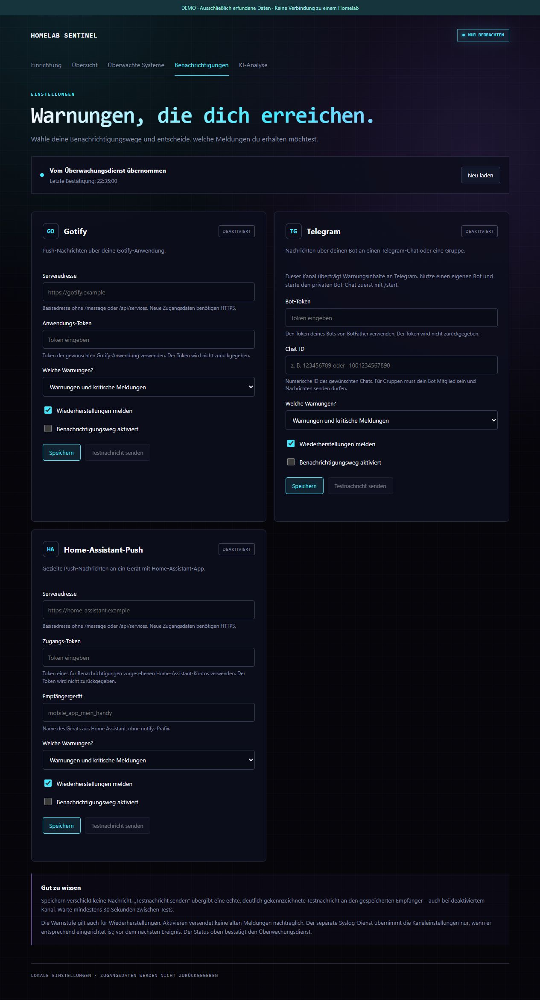

Beobachten
Lesende Schnittstellen und ein TLS-Syslog-Empfänger liefern Zustände aus deiner Umgebung. Einzelne Quellen können getrennt eingerichtet und pausiert werden.
Server, Speicher, Firewall, Backups und Smart Home an einem Ort im Blick. Deterministische Regeln erkennen bekannte Fehler, führen Ereignisse zu Vorfällen zusammen und melden, wenn deine Aufmerksamkeit gebraucht wird.
Projekt ansehen
Lesende Schnittstellen und ein TLS-Syslog-Empfänger liefern Zustände aus deiner Umgebung. Einzelne Quellen können getrennt eingerichtet und pausiert werden.
Feste Regeln erkennen Ausfälle, Speicherprobleme und ausgewählte Firewallereignisse. Zusammengehörige Ereignisse landen in einem Vorfall mit Verlauf.
Gotify, Telegram oder Home-Assistant-Push bringen Warnungen zu dir. Schweregrad und Meldungen zur Wiederherstellung lassen sich je Kanal wählen.
Der aktuelle Kern bleibt auch ohne KI vollständig funktionsfähig.
Ereignisse werden nach stabilen Schlüsseln gebündelt. Schweregrad, Verlauf und Wiederherstellung bleiben nachvollziehbar.
Ein herstellerneutraler Vertrag unterscheidet frische, veraltete, fehlgeschlagene, fehlende und zeitlich unplausible Sicherungen.
Ein unabhängiger Prüfer erkennt, wenn Sentinel selbst verstummt. Der Heartbeat enthält weder Geheimnisse noch Rohlogs.
Geplante Arbeiten können passende Meldungen zeitweise zurückhalten. Überwachung, Speicherung und Sicherheitswarnungen laufen weiter.
Gotify, Telegram und Home Assistant lassen sich nach Warnstufe und Wiederherstellungsstatus getrennt konfigurieren.
Fehlende oder ungültige Evidenz wird nicht als gesund ausgelegt. Größen-, Zeit- und Eingabegrenzen reduzieren Fehlverhalten.
Aufnahmen aus der vorhandenen Weboberfläche mit ausschließlich synthetischen Daten. Zum Vergrößern auf ein Bild klicken.

√úberwachte Systeme konfigurieren, lesend testen und bei Bedarf pausieren. Hinterlegte Zugangsdaten werden nicht wieder angezeigt.

Kanäle, Warnstufen und Wiederherstellungen einstellen. Verbindungstests und ausdrücklich ausgelöste Testnachrichten helfen bei der Einrichtung.
API-Anbieter können bei der Einordnung eines Vorfalls unterstützen. Zusätzlich befindet sich ein streng begrenzter CLI-Analyst für lokal angemeldete Codex-, Claude- oder kompatible Werkzeuge im Review.
Beide Wege erhalten nur reduzierte, begrenzte Vorfallsdaten. Der CLI-Prozess arbeitet ohne Shell, mit Zeit- und Ausgabegrenzen und muss ein festes JSON-Schema liefern. Fehler beeinflussen die deterministische Erkennung nicht.
Autonom möglich: klassifizieren, zusammenfassen, Prüfungen vorschlagen.
Nicht erlaubt: Dienste neu starten, Firewall oder Konfiguration ändern, beliebige Befehle ausführen.
Ideen und Implementierungen werden bewusst nach Reifegrad getrennt.
Codex und Claude können vorbereiten, testen und prüfen. GitHub Issues, Pull Requests und CI bilden den gemeinsamen Wissensstand. Merge und produktive Aktivierung bleiben menschliche Entscheidungen.
Diese Seite stellt das Projekt vor. Der Anwendungsquellcode bleibt vorerst in einem privaten Repository. Mitarbeit erfolgt auf Einladung. Eine öffentliche Installation oder Download-Version wird hier noch nicht angeboten.
Zurück zum Überblick ↑